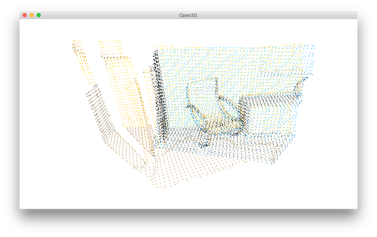

Fast global registration¶
The RANSAC based Global registration solution may take a long time due to countless model proposals and evaluations. [Zhou2016] introduced a faster approach that quickly optimizes line process weights of few correspondences. As there is no model proposal and evaluation involved for each iteration, the approach proposed in [Zhou2016] can save a lot of computational time.
This script compares the running time of RANSAC based Global registration and implementation of [Zhou2016].
5 6 7 8 9 10 11 12 13 14 15 16 17 18 19 20 21 22 23 24 25 26 27 28 29 30 31 32 33 34 35 36 37 38 39 40 41 42 43 44 45 46 47 48 | # examples/Python/Advanced/fast_global_registration.py
import open3d as o3d
from global_registration import *
import numpy as np
import copy
import time
def execute_fast_global_registration(source_down, target_down, source_fpfh,
target_fpfh, voxel_size):
distance_threshold = voxel_size * 0.5
print(":: Apply fast global registration with distance threshold %.3f" \
% distance_threshold)
result = o3d.registration.registration_fast_based_on_feature_matching(
source_down, target_down, source_fpfh, target_fpfh,
o3d.registration.FastGlobalRegistrationOption(
maximum_correspondence_distance=distance_threshold))
return result
if __name__ == "__main__":
voxel_size = 0.05 # means 5cm for the dataset
source, target, source_down, target_down, source_fpfh, target_fpfh = \
prepare_dataset(voxel_size)
start = time.time()
result_ransac = execute_global_registration(source_down, target_down,
source_fpfh, target_fpfh,
voxel_size)
print(result_ransac)
print("Global registration took %.3f sec.\n" % (time.time() - start))
draw_registration_result(source_down, target_down,
result_ransac.transformation)
start = time.time()
result_fast = execute_fast_global_registration(source_down, target_down,
source_fpfh, target_fpfh,
voxel_size)
print("Fast global registration took %.3f sec.\n" % (time.time() - start))
draw_registration_result(source_down, target_down,
result_fast.transformation)
|
Input¶
29 30 31 | voxel_size = 0.05 # means 5cm for the dataset
source, target, source_down, target_down, source_fpfh, target_fpfh = \
prepare_dataset(voxel_size)
|
For the pair comparison, the script reuses the prepare_dataset function defined in Global registration.
It produces a pair of downsampled point clouds as well as FPFH features.
Baseline¶
33 34 35 36 37 38 39 40 | start = time.time()
result_ransac = execute_global_registration(source_down, target_down,
source_fpfh, target_fpfh,
voxel_size)
print(result_ransac)
print("Global registration took %.3f sec.\n" % (time.time() - start))
draw_registration_result(source_down, target_down,
result_ransac.transformation)
|
This script calls RANSAC based Global registration as a baseline. After registration it displays the following result.
{kind=link}
RANSAC based global registration took 2.538 sec.
Fast global registration¶
With the same input used for a baseline, the next script calls the implementation of [Zhou2016].
15 16 17 18 19 20 21 22 23 24 | def execute_fast_global_registration(source_down, target_down, source_fpfh,
target_fpfh, voxel_size):
distance_threshold = voxel_size * 0.5
print(":: Apply fast global registration with distance threshold %.3f" \
% distance_threshold)
result = o3d.registration.registration_fast_based_on_feature_matching(
source_down, target_down, source_fpfh, target_fpfh,
o3d.registration.FastGlobalRegistrationOption(
maximum_correspondence_distance=distance_threshold))
return result
|
This script displays the following result.
{kind=link}
Fast global registration took 0.193 sec.
With proper configuration, the accuracy of fast global registration is even comparable with ICP. Please refer to [Zhou2016] for more experimental results.